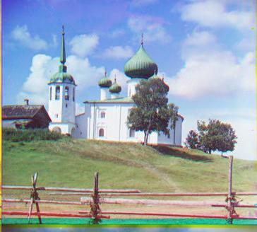

Computer Vision Project 1: Image Alignment and Color Compositing
Goal:
Take the digitized Prokudin-Gorskii glass plate images and automatically produce a color image with as few visual artifacts as possible. Extract the three color channel images and align them so that they form a single RGB color image.Baseline (Naive) Implementation:
To align the RGB images, I decided to use the Normalized Cross Correlation metric as a baseline, because I noticed that it outperfomed sum of squared differences (SSD) on a small sample of test images.
My program divides the image into 3 equal parts, aligns the second and the third parts (G and R) to the first (B).
For each image, I record the displacement vector that was used to align the parts.
Sample Image Results
NCC final image |
G |
R |
B |
However, since exhaustive search becomes expensive if the displacement search range/image resolution are too large, I implemented a second method for the high-res images: a single-scale and multi-scale aligning algorithm that searches over a user-specified window of displacements.
Image Pyramids
To handle alignment for larger images, where an exhaustive search of displacements can be pretty slow, we implement a faster search procedure - image pyramids. Given two images, the alignment process recursively resizes the images at multiple scales (by factors of 2) and respectively aligns them from the coarsest scale (smallest image size) to the finest scale. This allows a gradual estimation of the best displacement with a much smaller search window, therefore shrining computation time.
Image Pyramid Sample Results
 |
 |
 |
Sample Results
 |
 |
|  |  |